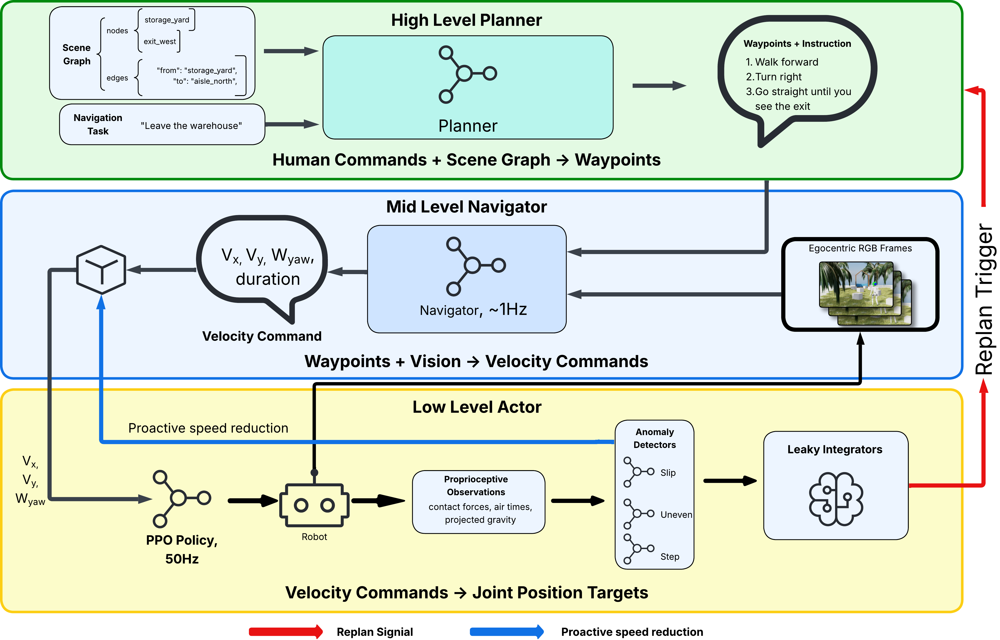
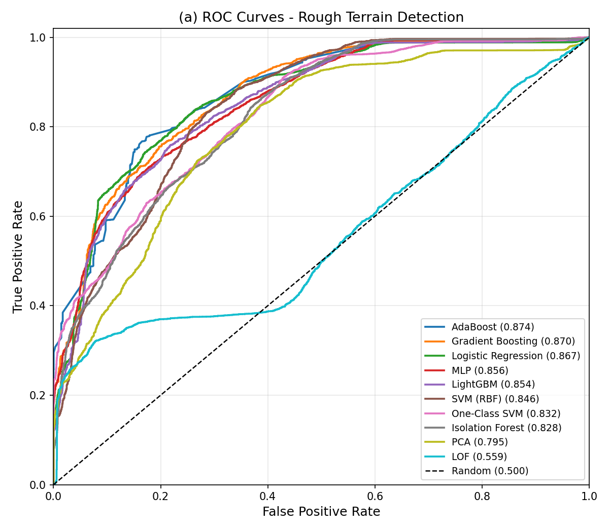
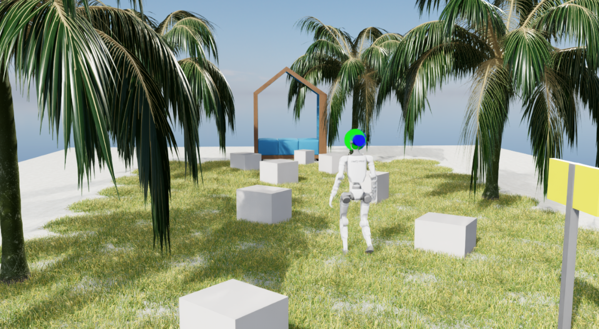

Abstract
Vision-Language-Action (VLA) models have advanced robotic navigation by unifying perception and planning, yet most systems operate open-loop—generating plans without awareness and adaptivity to locomotion feasibility and safety. This disconnect leads to cascading failures on challenging terrains and surfaces where pre-planned trajectories become infeasible. We propose Thinking on Its Feet (TOIF), a three-tier hierarchical control framework that closes the loop between low-level proprioceptive sensing and high-level semantic path planning for terrain-aware humanoid robot navigation.
At the low level, an RL locomotion policy is augmented with a multi-detector anomaly system that evaluates terrain-specific feasibility and safety constraints using compact proprioceptive features. Detected anomalies are accumulated through leaky integrators and translated into structured natural-language feedback, enabling the high-level planner to replan over a semantic scene graph. At the mid level, a vision-language-action model generates velocity commands that bridge high-level waypoints and low-level execution. We further introduce risk-aware velocity modulation that proactively reduces speed based on real-time anomaly confidence.
We validate TOIF in Isaac Lab simulation and on a physical Unitree G1 humanoid robot across several unsafe or challenging terrains. Results demonstrate that TOIF significantly improves navigation success rate and safety over open-loop baselines, and that the proprioceptive anomaly detectors transfer effectively to real-world deployment.
System Overview

Figure 2. TOIF system architecture. Commands flow downward through scene-graph planning, VLA navigation, and RL locomotion. Proprioceptive feedback flows upward through anomaly detection, leaky integration, and semantic translation, enabling the planner to replan with terrain-aware context.
TOIF operates as a three-tier cascade:
- High level (on-demand): An LLM planner receives a semantic scene graph and navigation task, producing waypoints with natural-language instructions. When proprioceptive feedback triggers a replan, the blocked edge is added to a persistent list and the LLM selects an alternative route.
- Mid level (~1 Hz): A VLA model (NaVILA) converts the current instruction and egocentric image sequence into metric velocity commands (vx, vy, ω). Risk-aware velocity modulation continuously scales speed based on real-time anomaly confidence.
- Low level (50 Hz): A PPO-trained RL locomotion policy executes joint-position targets on the Unitree G1 (29 DoF). A multi-detector anomaly system monitors proprioceptive signals and accumulates evidence through terrain-specific leaky integrators to filter transient noise.
Key Contributions
- A three-tier hierarchical architecture with bidirectional information flow that couples downward command propagation with upward proprioceptive feedback via natural-language terrain context.
- A risk-aware terrain adaptation mechanism combining sigmoid-based velocity modulation with leaky-integrator replan triggers using terrain-specific time constants to balance responsiveness against false-positive suppression.
- A multidetector proprioceptive anomaly system that learns compact, task-specific feature subsets for each terrain type (slippery, uneven, stepped), validated both in Isaac Lab simulation and on a real Unitree G1 with different sensor configurations.
Results
Navigation Performance
We evaluate over 20 trials per condition on two scenarios: S1 Warehouse Exit (detection-triggered semantic rerouting around a blocked doorway) and S2 Rocky Beach (continuous terrain adaptation on 18 m of uneven coastal terrain).
| Scenario | Method | SR (%) ↑ | Time (s) ↓ | Falls ↓ | Replans |
|---|---|---|---|---|---|
| S1: Warehouse Exit (T-Corridor) | |||||
| RRT* + Heuristic | 40 | 71.77 ± 12.98 | 0.5 ± 0.6 | — | |
| RRT* + DWA | 45 | 26.73 ± 8.58 | 0.0 ± 0.0 | — | |
| NaVILA E2E | 40 | 49.04 ± 7.17 | 0.2 ± 0.4 | — | |
| TOIF (Ours) | 65 | 37.34 ± 12.10 | 0.0 ± 0.0 | 0.80 ± 0.40 | |
| S2: Rocky Beach (Mixed Terrain) | |||||
| RRT* + Heuristic | 20 | 42.88 ± 12.76 | 0.8 ± 0.4 | — | |
| RRT* + DWA | 35 | 35.70 ± 2.08 | 0.60 ± 0.52 | — | |
| NaVILA E2E | 35 | 68.09 ± 10.20 | 0.65 ± 0.49 | — | |
| TOIF (Ours) | 60 | 84.81 ± 16.63 | 0.40 ± 0.52 | 0.50 ± 0.53 | |
Table 1. Navigation performance comparison (20 trials per condition, mean ± std). Best results in bold.
Ablation Study
Each ablated variant removes exactly one layer of the hierarchical architecture.
| Scenario | Variant | SR (%) ↑ | Time (s) ↓ | Falls ↓ | Replans |
|---|---|---|---|---|---|
| S1: Warehouse Exit (T-Corridor) | |||||
| TOIF (Full) | 65 | 37.0 ± 12.0 | 0.0 ± 0.0 | 0.8 ± 0.4 | |
| w/o Velocity Modulation | 50 | 39.0 ± 6.9 | 0.0 ± 0.0 | 0.9 ± 0.3 | |
| w/o Anomaly Detection | 20 | 20.5 ± 1.5 | 0.3 ± 0.5 | — | |
| w/o High-Level Planning | 15 | 44.2 ± 9.8 | 0.1 ± 0.3 | — | |
| S2: Rocky Beach (Mixed Terrain) | |||||
| TOIF (Full) | 60 | 84.81 ± 16.63 | 0.40 ± 0.52 | 0.50 ± 0.53 | |
| w/o Velocity Modulation | 50 | 67.81 ± 10.23 | 0.50 ± 0.50 | 0.45 ± 0.51 | |
| w/o Anomaly Detection | 25 | 64.62 ± 11.53 | 0.75 ± 0.44 | — | |
| w/o High-Level Planning | 35 | 63.20 ± 8.85 | 0.65 ± 0.49 | — | |
Table 2. Ablation study (20 trials per condition). Each row removes one module from the full system.
Real-World Validation
We deploy the anomaly detection component on a physical Unitree G1 and evaluate it across three laboratory terrain types: uneven terrain (speed bumps), stepped terrain (40 cm-height toolboxes), and slippery terrain (wooden boards inclined at 30–45°).
Experiment Videos with Live Anomaly Scores
Uneven Terrain (Rough)
Unitree G1 traversing uneven terrain (speed bumps). The anomaly detector (AdaBoost, AUC = 0.874) outputs live scores; the dashed line marks the F1-optimal threshold (τ = −0.250).
Stepped Terrain
Unitree G1 navigating 40 cm-height stepped obstacles. The anomaly detector (XGBoost, AUC = 0.942) triggers prompt activation on IMU yaw orientation (τ = 0.080).

Figure 3. Real-world anomaly detection on a physical Unitree G1 across three terrain types. Each row shows robot snapshots (top) and temporal anomaly scores (bottom). a: uneven terrain (τ = −0.250). b: stepped terrain (τ = 0.080). c: slippery terrain (τ = 0.040). Bold curves: smoothed scores; light traces: raw output; dashed lines: F1-optimal thresholds.

Figure 4. ROC curve for the real-world uneven terrain anomaly detector (AdaBoost, AUC = 0.874).
| Terrain | Model | Dim | AUC |
|---|---|---|---|
| Uneven | AdaBoost | 4D | 0.874 |
| Stepped | XGBoost | 1D | 0.942 |
| Sloped | LOF | 4D | 0.813 |
Table 3. Real-world anomaly detectors on Unitree G1.
Gallery

Motivation: TOIF closes the open-loop gap in VLA-based humanoid navigation.
Three-tier architecture with bidirectional information flow.

S2 Rocky Beach: 18 m coastal terrain requiring continuous terrain adaptation.
Real-world anomaly detection on a physical Unitree G1 across three terrain types.
BibTeX
@inproceedings{toif2026,
title = {Thinking on Its Feet: Terrain-Aware Hierarchical Control
with Proprioceptive Feedback for Humanoid Navigation},
author = {Anonymous Authors},
booktitle = {IEEE/RSJ International Conference on Intelligent Robots
and Systems (IROS)},
year = {2026},
url = {https://yuhaiw.github.io/TOIF/}
}